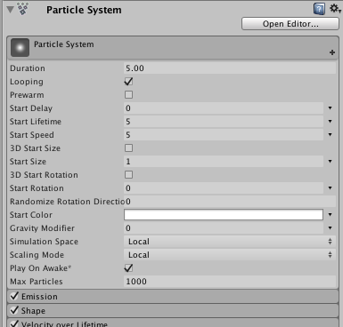

ParticleSystem 的脚本接口。功能强大、用途广泛的 Unity 粒子系统实现。
常规参数
粒子系统的常规参数保存在一个特殊的主模块中。在 Inspector 中，这些参数显示在所有其他模块上方：

在脚本中，可以通过 ParticleSystem.main 访问这些参数。
模块效果乘数
每个模块都有一些特殊的乘数属性，利用这些属性，您可以在不编辑曲线本身的情况下更改曲线的整体效果。这些乘数属性全部以它们影响的曲线命名 - 例如，ParticleSystem.emission.rateMultiplier 控制 ParticleSystem.emission.rate 在给定系统中的整体效果。
常量值的简写表示法
对于简单的常量值，参数支持简写表示法。要为参数设置常量值，只需为其指定一个数字。无需在 ParticleSystemCurveMode.Constant 模式下创建 MinMaxCurve 或 MinMaxGradient 对象。
例如，下面的语句：\
ParticleSystem.emission.rate = new ParticleSystem.MinMaxCurve(5.0f);\
应写成：\
ParticleSystem.emission.rate = 5.0f;
性能注意事项：在粒子模块上设置属性时，设置会立即传递到本机代码。这样可以提供最佳的性能。也就是说，在模块结构上设置属性时，不会在脚本中设置需要重新设置回粒子系统的内容；一切都是自动完成的。
另请参阅：Particle。
| collision | 粒子系统 CollisionModule 的脚本接口。 |
| colorBySpeed | 粒子系统 ColorByLifetimeModule 的脚本接口。 |
| colorOverLifetime | 粒子系统 ColorOverLifetimeModule 的脚本接口。 |
| customData | 粒子系统 CustomDataModule 的脚本接口。 |
| emission | 粒子系统 EmissionModule 的脚本接口。 |
| externalForces | 粒子系统 ExternalForcesModule 的脚本接口。 |
| forceOverLifetime | 粒子系统 ForceOverLifetimeModule 的脚本接口。 |
| inheritVelocity | 粒子系统 InheritVelocityModule 的脚本接口。 |
| isEmitting | 确定粒子系统是否发射粒子。当粒子系统的发射模块已完成、已暂停或已使用 Stop 和 StopEmitting 标志来停止该系统时，粒子系统可能停止发射。可以调用 Play 来恢复发射。 |
| isPaused | 确定粒子系统是否已暂停。 |
| isPlaying | 确定粒子系统是否在播放。 |
| isStopped | 确定粒子系统是否已停止。 |
| lights | 粒子系统 LightsModule 的脚本接口。 |
| limitVelocityOverLifetime | 粒子系统 LimitVelocityOverLifetimeModule 的脚本接口。. |
| main | 访问主粒子系统设置。 |
| noise | 粒子系统 NoiseModule 的脚本接口。 |
| particleCount | 当前粒子数（只读）。 |
| proceduralSimulationSupported | 该系统是否支持程序化模拟？ |
| randomSeed | 重载用于粒子系统发射的随机种子。 |
| rotationBySpeed | 粒子系统 RotationBySpeedModule 的脚本接口。 |
| rotationOverLifetime | 粒子系统 RotationOverLifetimeModule 的脚本接口。 |
| shape | 粒子系统 ShapeModule 的脚本接口。 |
| sizeBySpeed | 粒子系统 SizeBySpeedModule 的脚本接口。 |
| sizeOverLifetime | 粒子系统 SizeOverLifetimeModule 的脚本接口。 |
| subEmitters | 粒子系统 SubEmittersModule 的脚本接口。 |
| textureSheetAnimation | 粒子系统 TextureSheetAnimationModule 的脚本接口。 |
| time | 播放位置（以秒为单位）。 |
| trails | 粒子系统 TrailsModule 的脚本接口。 |
| trigger | 粒子系统 TriggerModule 的脚本接口。 |
| useAutoRandomSeed | 控制粒子系统是否使用自动生成的随机数作为随机数生成器的种子。 |
| velocityOverLifetime | 粒子系统 VelocityOverLifetimeModule 的脚本接口。 |
| Clear | 删除粒子系统中的所有粒子。 |
| Emit | 立即发射 count 个粒子。 |
| GetCustomParticleData | 获取自定义每粒子数据流。 |
| GetParticles | 获取该粒子系统的粒子。 |
| GetPlaybackState | 返回与粒子系统的当前内部状态有关的所有数据。 |
| GetTrails | 返回与粒子系统轨迹的当前内部状态有关的所有数据。 |
| IsAlive | 粒子系统是否包含任何存活的粒子，还是会产生更多粒子？ |
| Pause | 暂停系统，因此不再发射新粒子，也不再更新现有粒子。 |
| Play | 启动粒子系统。 |
| SetCustomParticleData | 设置自定义每粒子数据流。 |
| SetParticles | 设置该粒子系统的粒子。 |
| SetPlaybackState | 将此方法与先前调用 ParticleSystem.GetPlaybackState 的结果一起使用，以便将粒子系统恢复到存储在 playbackState 对象中的状态。 |
| SetTrails | 将此方法与先前调用 ParticleSystem.GetTrails 的结果一起使用，以便将粒子系统恢复到存储在轨迹对象中的状态。 |
| Simulate | 在给定时间段内模拟粒子以快进粒子系统，然后将其暂停。 |
| Stop | 使用提供的停止行为，停止播放粒子系统。 |
| TriggerSubEmitter | 在粒子系统的所有粒子上触发指定的子发射器。 |
| ResetPreMappedBufferMemory | 重置用于有效渲染粒子系统的保留图形内存的缓存。 |
| gameObject | 此组件附加到的游戏对象。始终将组件附加到游戏对象。 |
| tag | 此游戏对象的标签。 |
| transform | 附加到此 GameObject 的 Transform。 |
| hideFlags | 该对象应该隐藏、随场景一起保存还是由用户修改？ |
| name | 对象的名称。 |
| BroadcastMessage | 调用此游戏对象或其任何子项中的每个 MonoBehaviour 上名为 methodName 的方法。 |
| CompareTag | 此游戏对象是否使用 tag 进行了标记？ |
| GetComponent | 如果游戏对象附加了类型为 type 的组件，则将其返回，否则返回 null。 |
| GetComponentInChildren | 使用深度首次搜索返回 GameObject 或其任何子项中类型为 type 的组件。 |
| GetComponentInParent | 返回 GameObject 或其任何父项中类型为 type 的组件。 |
| GetComponents | 返回 GameObject 中类型为 type 的所有组件。 |
| GetComponentsInChildren | 返回 GameObject 或其任何子项中类型为 type 的所有组件。 |
| GetComponentsInParent | 返回 GameObject 或其任何父项中类型为 type 的所有组件。 |
| SendMessage | 调用此游戏对象中的每个 MonoBehaviour 上名为 methodName 的方法。 |
| SendMessageUpwards | 调用此游戏对象中的每个 MonoBehaviour 上或此行为的每个父级上名为 methodName 的方法。 |
| TryGetComponent | 获取指定类型的组件（如果存在）。 |
| GetInstanceID | 返回对象的实例 ID。 |
| ToString | 返回对象的名称。 |
| Destroy | 移除 GameObject、组件或资源。 |
| DestroyImmediate | 立即销毁对象 /obj/。强烈建议您改用 Destroy。 |
| DontDestroyOnLoad | 在加载新的 Scene 时，请勿销毁 Object。 |
| FindObjectOfType | 返回第一个类型为 type 的已加载的激活对象。 |
| FindObjectsOfType | 返回所有类型为 type 的已加载的激活对象的列表。 |
| Instantiate | 克隆 original 对象并返回克隆对象。 |
| bool | 该对象是否存在？ |
| operator != | 比较两个对象是否引用不同的对象。 |
| operator == | 比较两个对象引用，判断它们是否引用同一个对象。 |